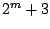

Example B01.wavetables.pd, shown in Figure 2.12, implements a wavetable oscillator, which plays back from a wavetable named ``table10". Two new Pd primitives are shown here. First is the wavetable itself, which appears at right in the figure. You can ``mouse" on the wavetable to change its shape and hear the sound change as a result. Not shown in the figure but demonstrated in the patch is Pd's facility for automatically calculating wavetables with specified partial amplitudes, which is often preferable to drawing waveforms by hand. You can also read and write tables to (text or sound) files for interchanging data with other programs. The other novelty is an object class:
 :
a wavetable oscillator. The ``4" indicates that this class uses 4-point
(cubic) interpolation. In the example, the table's name, ``table10", is
specified as a creation argument to the tabosc4~ object.
(You can also switch between wavetables dynamically by sending appropriate
messages to the object.)
:
a wavetable oscillator. The ``4" indicates that this class uses 4-point
(cubic) interpolation. In the example, the table's name, ``table10", is
specified as a creation argument to the tabosc4~ object.
(You can also switch between wavetables dynamically by sending appropriate
messages to the object.)
Wavetables used by tabosc4~ must always have a period equal to a power of two; but as shown above, the wavetable must have three extra points wrapped around the ends. Allowable table lengths are thus of the form , such as 131, 259, 515, etc.
Wavetable oscillators are not limited to use as audio oscillators. Patch B02.wavetable.FM.pd (not pictured here) uses a pair of wavetable oscillators in series. The first one's output is used as the input of the second one, and thus controls its frequency which changes periodically in time.